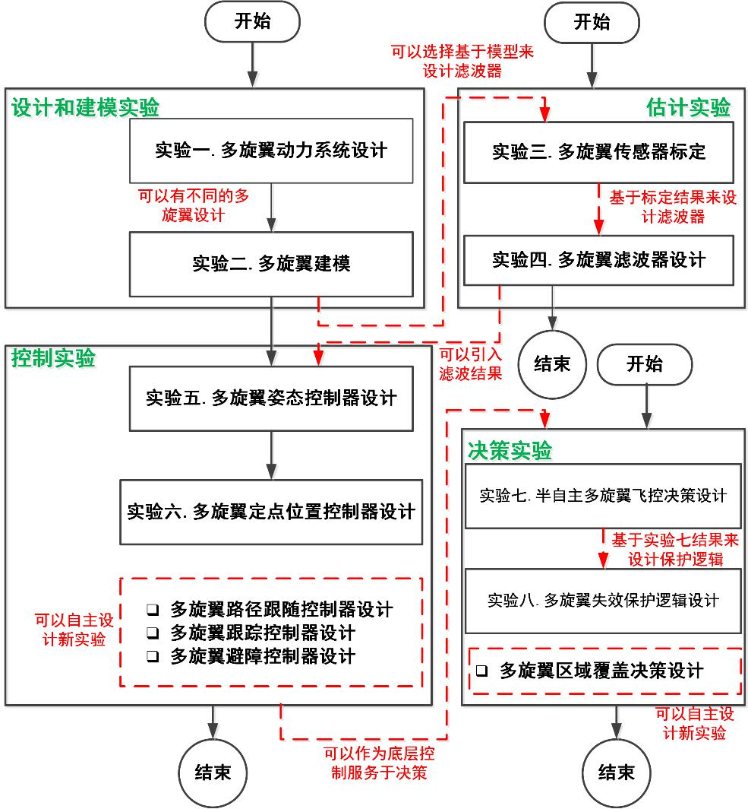

2. 课程内容¶
本课程包含十二讲，前四讲主要介绍软硬件实验平台基本使用方法，后八讲包含了八个实验。这八个实验可以分为四个板块，即设计和建模实验版块、估计实验版块、控制实验版块以及决策实验版块。

图 2.1¶
在从本网页的 下载页面 获取到安装文件后, 下面四讲内容将介绍如何安装并应用本课程的软件包:
第01讲: 课程介绍. [pdf]
第02讲: 实验平台配置. [pdf]
第03讲: 实验平台使用. [pdf] [Code]
第04讲: 实验流程. [pdf]
接下来的八讲对应了本课程的八个实验，我们提供了详细的例程和源码，保证每个实验或者每个版块的实验可以单独完成.
第05讲: 实验一：动力系统设计. [pdf] [Code]
第06讲: 实验二：动态建模. [pdf] [Code]
第07讲: 实验三：传感器标定. [pdf] [Code]
第08讲: 实验四：滤波器设计. [pdf] [Code]
第09讲: 实验五：姿态控制器设计. [pdf] [Code]
第10讲: 实验六：定点位置控制器设计. [pdf] [Code]
第11讲: 实验七：半自主控制模式设计. [pdf] [Code]
第12讲: 实验八：失效保护逻辑设计. [pdf] [Code]
最新的源码与课件也可以在我们的Github页面下载: